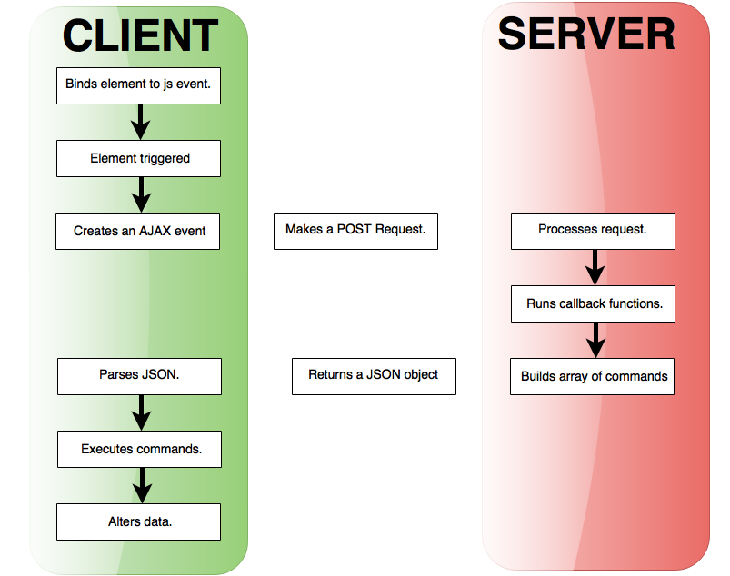
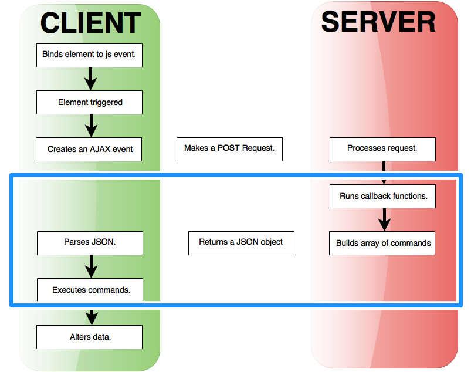

#NYCcamp
@WeAreGenuine
AJAX Commands /
@mikemiles86
Demystifying Drupal AJAX Commands
http://nyccamp.org/node/287
NYC CAMP 2015
#NYCcamp
Goals of this Session
- Explain what AJAX commands are.
- Demonstrate how to use AJAX commands.
- Outline how to create AJAX commands.
Michael Miles
From: Boston, MA USA
Work: Genuine @WeAreGenuine(.com)
Exp: Working with Drupal since 2008.
Acquia Certified. 2014 Acquia MVP.
Twitter: @mikemiles86
Drupal.org: mikemiles86
All the Places: mikemiles86
Where are AJAX Commands?
AJAX Request Lifecycle
The Drupal AJAX Framework
- Binds page elements to an AJAX callback.
- Callback makes a server side request.
- Server returns a json object of commands.
- Javascript executes commands.
More info: http://bit.ly/DrupalAJAX
AJAX commands in Lifecycle.
What are AJAX Commands?

From a high level
- Defined in Drupal Core or by Modules.
- What are returned from all AJAX requests.
- A PHP wrapper for javascript methods.
On the Server Side
- A PHP function which returns an associative array.
- Array must have a value with key 'command'.
- Additional elements set a response data.
/**
* Creates a Drupal Ajax 'alert' command.
*/
function ajax_command_alert($text) {
return array(
'command' => 'alert',
'text' => $text,
);
}
On the Client Side
- A method in the Drupal.ajax[command] space.
- Recieves 'ajax', 'response' and 'status' arguments.
- Invokes additional javascript.
/**
* Provide a series of commands that the server can request the client perform.
*/
Drupal.ajax.prototype.commands = {
//...
/**
* Command to provide an alert.
*/
alert: function (ajax, response, status) {
alert(response.text, response.title);
},
//...
}

How to use AJAX Commands?

Returning AJAX Commands.
- Attach AJAX to elements.
- Define a callback function.
- Return array of AJAX commands.
1. Attach AJAX to elements.
/**
* Render a page of messages.
*/
function mymodule_messages_page() {
// Include AJAX library.
drupal_add_library('system', 'drupal.ajax');
$content = theme_item_list(array(
'type' => 'ul',
'attributes' => array( 'id' => 'unread-msgs'),
'items' => mymodule_messages_list(mymodule_get_unread_messages()),
));
$content .= '<div id="current-msg"></div>';
$content .= theme_item_list(array(
'type' => 'ul',
'attributes' => array('id' => 'read-msgs'),
'items' => mymodule_messages_list(mymodule_get_read_messages(), FALSE),
));
return $content;
}
mymodule/mymodule.module 1. Attach AJAX to elements. (continued)
/**
* Return array of message titles for use in a list.
*/
function mymodule_messages_list($messages, $display_link = TRUE) {
$list_items = array();
foreach ($messages as $mid => $msg) {
// Prep link class so Drupal knows to use AJAX.
$attributes = array('#attributes' => array('class' => array('use-ajax')));
// Build link to AJAX callback.
$link = l($msg->subject, 'read-message-callback/nojs/' . $mid, $attributes);
// Create list item for message.
$list_items[] = array(
'id' => 'msg-' . $mid,
// Set data to read message link or just message subject.
'data' => $display_link ? $link : $msg->subject,
);
}
return $items;
}
mymodule/mymodule.module 2. Define a callback function.
/**
* Implements hook_menu().
*/
function mymodule_menu() {
$items = array();
// ... Other menu items.
$items['read-message-callback'] = array(
'title' => 'AJAX Callback to read a messages',
'access arguments' => array('access content'),
'page callback' => 'mymodule_read_message_callback',
'type' => MENU_CALLBACK,
);
return $items;
}
mymodule/mymodule.module 3. Return array of AJAX commands using ajax_render(). [D7]
/**
* AJAX Callback to read a message.
*/
function mymodule_read_message_callback($method, $mid) {
// load message.
$msg = mymodule_load_message($mid);
// Create array of commands.
$commands = array(
// Display message in 'current-msg' div.
ajax_command_replace('#current-msg', $msg->content),
// Remove message from unread list.
ajax_command_remove('#msg-' . $mid),
// Add message to read list
ajax_command_append('#read-msgs', '<li>' . $msg->subject . '</li>'),
);
// Return AJAX render.
return ajax_render($commands);
}
mymodule/mymodule.module 3. Return array of AJAX commands Using a render array. [D7]
/**
* AJAX Callback to read a message.
*/
function mymodule_read_message_callback($method, $mid) {
// load message.
$msg = mymodule_load_message($mid);
// Return Render array of commands.
return array(
'#type' => 'ajax',
'#commands' => array(
// Display message in 'current-msg' div.
ajax_command_replace('#current-msg', $msg->content),
// Remove message from unread list.
ajax_command_remove('#msg-' . $mid),
// Add message to read list
ajax_command_append('#read-msgs', '<li>' . $msg->subject . '</li>'),
));
}
mymodule/mymodule.module 3. Return array of AJAX commands using AJAXResponse() [D8]
/**
* AJAX Callback to read a message.
*/
function mymodule_read_message_callback($method, $mid) {
// load message.
$msg = mymodule_load_message($mid);
// Create AJAX Response object.
$response = new AjaxResponse();
// Display message in 'current-msg' div.
$response->addCommand( new ReplaceCommand('#current-msg', $msg->content));
// Remove message from unread list.
$response->addCommand( new RemoveCommand('#msg-' . $mid));
// Add message to read list.
$item = '<li>' . $msg->subject . '</li>';
$response->addCommand( new AppendCommand('#read-msgs', $item));
// Return ajax response.
return $response;
}
mymodule/mymodule.module 
Custom AJAX Commands?

Steps for creating a custom command
- Add a method to the Drupal.ajax[command] js object.
- Write PHP that returns a 'command' associative array.
That's it.

Creating a Custom AJAX Command in Drupal 7
1. Add method to 'Drupal.ajax.prototype.commands'.
(function($, Drupal) {
/**
* Add new command for reading a message.
*/
Drupal.ajax.prototype.commands.readMessage = function(ajax, data, status) {
// Place content in current-msg div.
$('#current-msg').replaceWith(data.content);
// Remove from unread list.
$('#msg-' + data.mid).remove();
// Add message to read list.
$('#read-msgs').append('<li>' + data.subject + '</li>');
}
})(jQuery, Drupal);
mymodule/js/commands.js 2. Define a PHP function to return a 'command' array.
/**
* AJAX command to read a message.
*/
function mymodule_command_read_message($message) {
return array(
'command' => 'readMessage',
'data' => array(
'mid' => $message->mid,
'subject' => $message->subject,
'content' => $message->content,
));
}
mymodule/mymodule.module Creating a Custom AJAX Command in Drupal 8
1. Add method to 'Drupal.AjaxCommands.prototype'.
(function($, Drupal) {
/**
* Add new command for reading a message.
*/
Drupal.AjaxCommands.prototype.readMessage = function(ajax, data, status) {
// Place content in current-msg div.
$('#current-msg').replaceWith(data.content);
// Remove from unread list.
$('#msg-' + data.mid).remove();
// Add message to read list.
$('#read-msgs').append('<li>' + data.subject + '</li>');
}
})(jQuery, Drupal);
mymodule/js/commands.js2. Define command object that implements CommandInterface.
namespace Drupal\mymodule\Ajax;
use Drupal\Core\Ajax\CommandInterface;
class ReadMessageCommand implements CommandInterface {
protected $message;
public function __construct($message) {
$this->message = $message;
}
public function render() {
return array(
'command' => 'readMessage',
'data' => array(
'mid' => $this->message->mid,
'subject' => $this->message->subject,
'content' => $this->message->content,
));
}
}
mymodule/src/Ajax/ReadMessageCommand.phpSteps for using a custom command.
- Tell Drupal to include custom javascript.
- Invoke custom command in callback function.
Again...
Using a custom AJAX Command in Drupal 7
1. Use drupal_add_js() to include custom javascript.
/**
* Render a page of my messages
*/
function mymodule_messages_page() {
// Include AJAX library.
drupal_add_library('system', 'drupal.ajax');
// Include custom javascript.
drupal_add_js(drupal_get_path('module', 'mymodule') . '/js/commands.js');
// .. Build $content.
return $content;
}
mymodule/mymodule.module2. Invoke command in callback function.
/**
* AJAX Callback to read a message.
*/
function mymodule_read_message_callback($method, $mid) {
// load message.
$msg = mymodule_load_message($mid);
// Create array of commands.
$commands = array(
// Read the message.
mymodule_command_read_message($msg),
);
// Return AJAX render.
return ajax_render($commands);
}
mymodule/mymodule.moduleUsing a custom AJAX Command in Drupal 8
...just a little bit more complicated.1.a. Tell Drupal about your javascript library with a libraries.yml file.
mymodule.commands:
version: VERSION
js:
js/commands.js: {}
dependencies:
- core/drupal.ajax
mymodule/mymodule.libraries.yml1.b. Attach library to a render array.
/**
* Render a page of my messages
*/
function mymodule_messages_page() {
// .. build $content
// Create render array.
$page[] = array(
'#type' => 'markup',
'#markup' => $content,
);
// Attach javascript library.
$page['#attached']['library'][] = 'mymodule/mymodule.commands';
return \Drupal::service('renderer')->render($page);
}
mymodule/mymodule.module2. Add Command to AjaxResponse object.
/**
* AJAX Callback to read a message.
*/
function mymodule_load_message($method, $mid) {
// load message.
$msg = mymodule_load_message($mid);
// Create AJAX Response object.
$response = new AjaxResponse();
// Set the message to be read.
$response->addCommand( new ReadMessageCommand($msg));
// Return ajax response.
return $response;
}
mymodule/mymodule.module
Let's Review

AJAX Commands are...
- Returned by all AJAX Framework callbacks.
- PHP wrappers for invoking javascript methods.
- Javascript methods part of the Drupal.ajax[Command] object.
To Use AJAX Commands...
- Include Drupal javascript library.
- Attach AJAX to elements.
- Return array of commands from callback.
To Create AJAX Commands...
- Add method to Drupal.ajax[Command] javascript object.
- Write PHP code to return associative 'command' array.

Thank You!
Questions?

Send me Feedback!
@mikemiles86
#NYCcamp
Resources
Drupal AJAX Framework: bit.ly/DrupalAJAX
Drupal 7 Commands: bit.ly/D7ajaxCMD
Drupal 8 Commands: bit.ly/D8ajaxCMD
This Presentation: bit.ly/NYCcampAJAX
Presentation Slides: bit.ly/NYCcampAJAXSlides